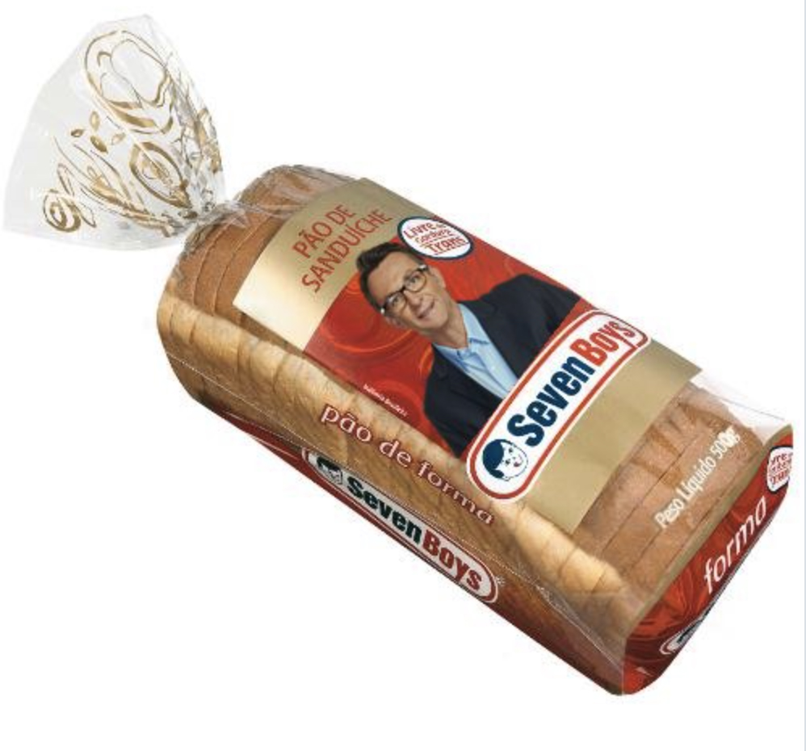

"Vocês tinham que ter vindo a pé, comendo aquele lanche que eu comia PÃ0, aquele Seven Boys

"Vocês estão de sacanagem! Vocês não correm! Para não falar outra coisa, para eu não tomar processo por causa de vocês. Flávio Adauto, Alessandro, vocês estão fazendo o que como diretores? Seus Zé Ruela! Seus orelhudo! Vocês vão perder o campeonato para o Palmeiras. E sabe quem vai aguentar? Eu!" esbravejou Neto.
" Ô Carile, para com essa conversa mole! Vai dar, vai da... NÂO VAI DAR!!!"
"Vocês vêm cada dia com um carro, ganha 500 pau [sic] por mês! A torcida ganha quanto, 800 reais? Vocês tão de brincadeira, vocês tinham que ter vindo a pé, comendo aquele lanche que eu comi", disparou ele, lembrando os tempos de camisa 10 do Timão. "Pão, aqueles pão de forma, aquele queijo que já estava lá há uma semana, grudado e aquele apresuntado, não é presunto Sadia não.